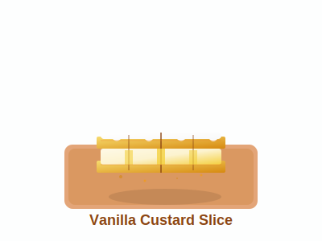

Our Products
Discover our delicious range of breads and pastries, baked fresh every day with the finest ingredients.
Sourdough Bread - R45

Our classic sourdough made with organic flour and a 24-hour fermentation for a rich, tangy flavor and perfect crust.
Swirled Pastry - R25

Buttery, flaky swirled pastry baked fresh daily, perfect for a sweet treat with your morning coffee.
Puffed Pastry - R30
Light and airy puff pastry with golden layers, topped with toasted meringue for a delightful crunch and sweetness.
Vanilla Slice - R50
Rich vanilla custard layered between crisp pastry sheets, a classic dessert that melts in your mouth.
Almond Danish - R28
Almond Danish pastry swirled with almond paste and topped with toasted flaked almonds, perfect for nut lovers.
Visit us to explore more treats and seasonal specials!